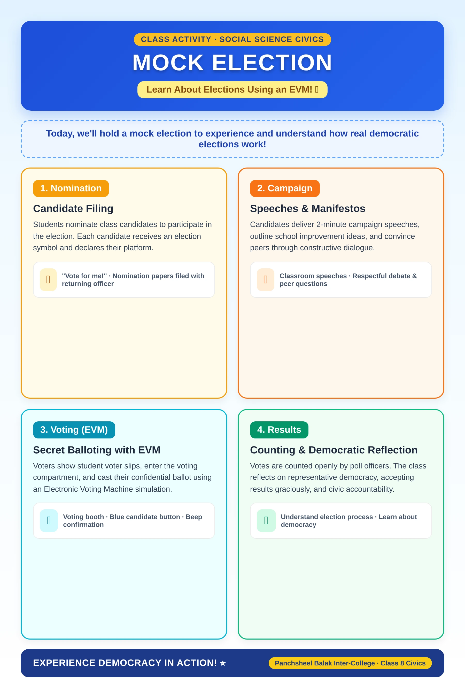
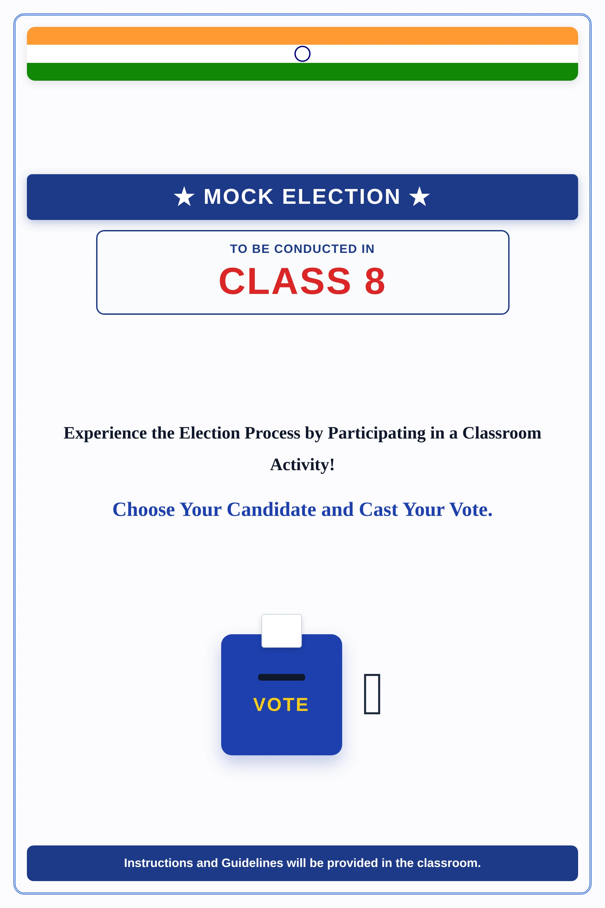
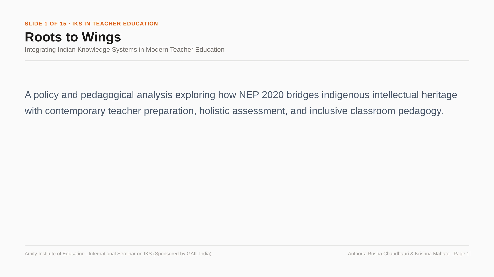
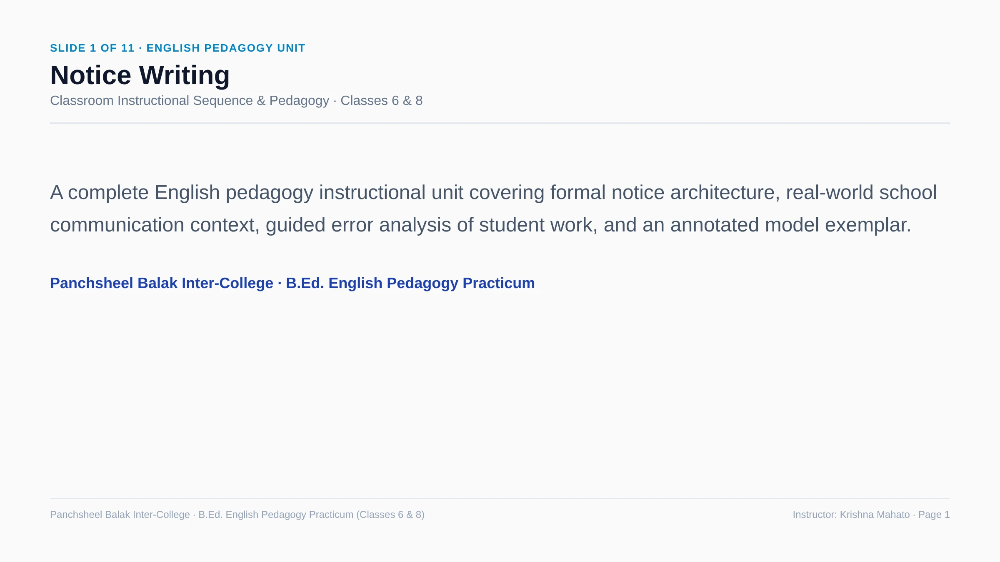
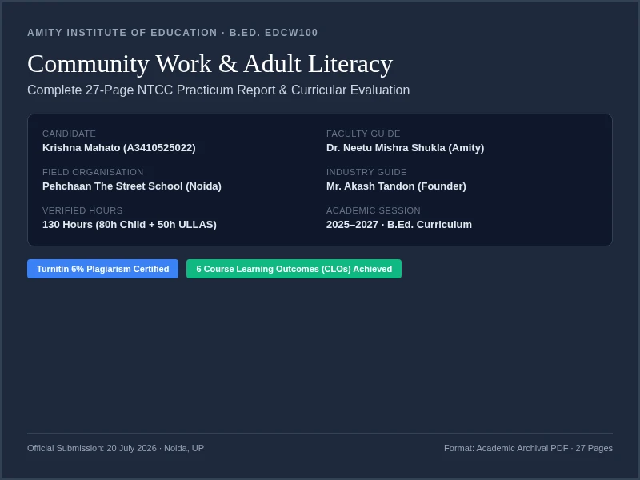

Democracy · Lesson Plan No. 6
A 40-minute school-practicum plan covering democratic government, elections and citizen participation through questioning, visuals, discussion and written practice.
Teaching Resources
Published teaching files, with context and links to the original evidence.
Selected teaching evidence · Lesson plan
A dated Social Science plan for Class IX-B, with prior-knowledge questions, visual resources, discussion and assessment tasks.
The plan records intended teaching and expected responses. Student work and completed reflection are not included.
Teacher’s Resource Library
11 files in the library
A 40-minute school-practicum plan covering democratic government, elections and citizen participation through questioning, visuals, discussion and written practice.

A structured 4-stage experiential learning guide for conducting classroom mock elections using an Electronic Voting Machine (EVM) simulation: nomination, campaigning, secret balloting, and democratic counting in action.

Official classroom display board poster designed for school notice boards, introducing Class 8 students to candidate nominations, franchise rights, and democratic participation.

A 15-slide research presentation delivered at the international seminar sponsored by GAIL India, examining epistemic plurality, NCF 2023 developmental stages, Panchakosha holistic assessment, and pedagogical frameworks for Indian Knowledge Systems.

An 11-slide instructional unit for secondary English teaching, combining formal notice layout, uncorrected student draft analysis with targeted teacher annotations, and an exemplar writing model.

Structured visual teaching learning material contrasting Direct vs. Indirect Democracy and Parliamentary vs. Presidential government systems using comparative architectural diagrams and primary photographic sources.

Tactile phonics flashcards, alphabet tracing guides, visual-motor maze worksheets, and two-letter blend cards developed for early learners and ULLAS adult literacy sessions.
Inquiry-prompt source cards pairing historical Indian election photographs and protest marches with open-ended diagnostic questioning to provoke analytical discussion on constitutional accountability.
Tiered formative check-for-understanding sheets featuring diagnostic recall prompts, guided differentiation questions, and independent evaluative tasks designed to immediately inform subsequent instruction.

Official 27-page Non-Teaching Credit Course (NTCC) community engagement report submitted to Amity Institute of Education under Faculty Guide Dr. Neetu Mishra Shukla and Founder Akash Tandon. Details 80 verified hours of kindergarten teaching at Pehchaan The Street School and 50 hours of ULLAS adult literacy with security guards and sanitation workers. Turnitin certified (6% similarity).

Authentic 40-mark diagnostic test instrument (Annexure 2 of NTCC report) administered to kindergarten learners at Pehchaan The Street School. Features English/Hindi alphabet missing letters, counting & shape identification, picture words, and single-digit addition and subtraction.
No teaching files match this search.
Completed student responses, marked feedback and lesson reflections have not yet been published.